DrIG：采用双角色标识符的生成式通用多模态检索
DrIG 研究的是“让模型直接生成候选标识符”的通用多模态检索：查询可以是文本、图像或图文组合，候选也可以是这三种形态，模型还要从自然语言 instruction 中推断目标模态和任务意图。论文由 Kaipeng Li、Haitao Yu 与 Xuanchen Zhou 完成，一作主机构为独立研究者，合作机构为筑波大学图书馆、信息与媒体科学系及知识与图书馆科学学院。论文于 2026 年 8 月 13 日以 arXiv v1 公开，当前标注为 under review；论文入口为 arXiv:2608.12987。首页脚注写明 The code will be released，但截至本次核验尚未发现公开仓库，因此不能把它描述成已经开源或可完整复现。
生成式检索把候选压成可自回归生成的离散标识符，但一旦相关候选的早期前缀在 beam search 中被剪掉，后续就再也无法恢复；在文本、图像和图文混合候选共存时，标识符还必须同时容纳目标模态与细粒度语义，而量化又会丢失密集向量中的精细区别。
1. 背景和问题
经典检索通常把流程拆成索引、召回与排序：候选先被编码进可搜索空间，在线阶段取出一批近邻，再由更昂贵的模型重排。它的优点是每层职责清晰，也能按成本组合 sparse、dense 与 cross-encoder；缺点是各阶段的目标并不天然一致，召回遗漏的候选无法由后续重排恢复。生成式信息检索试图改写这条链路：先为每个候选分配离散 identifier，再训练生成器在给定查询时直接输出相关 identifier。这样，检索从“对大候选池逐个或近似算相似度”变成“在紧凑离散空间中进行条件生成”，候选库也可以被 Trie 等结构约束为合法路径。DrIG 的研究问题不只是把这套思路用于文生图，而是把它推到 universal multimodal retrieval：同一模型要处理文本到图像、图像到文本、图文到文本、图文到图文等八类映射，还要理解 instruction 指定的目标类型与领域。
这一设定首先暴露 left-to-right decoding 的不可逆前缀风险。受约束 beam search 在第 $i$ 步只保留有限条 prefix；如果正确候选的早期 token 概率不占优，它所在的分支会被剪掉，即使完整 identifier 与查询高度相关，也没有机会在后续层级翻盘。扩大 beam 能提高覆盖，却会直接降低吞吐，而且它仍然只根据当前路径的局部顺序分数扩展。既有 term-set 或 planning-ahead 工作说明，无序或并行相关性信号能缓解前缀依赖，但 DrIG 面对的是更异构的候选：第一步还必须先判定目标是 image、text 还是 image-text pair，之后才逐级区分语义。若所有层都只学习一般语义，混合候选库可能在最早层浪费大量 beam；若第一层只做模态路由，后续层又必须有足够容量表达细粒度内容。
第二个矛盾来自 identifier 本身。连续向量可以在高维空间保留细微区别，离散 residual quantization 则用有限 codebook 逐层逼近它。量化越深、词表越大，identifier 的表达能力通常越强，但自回归步数、Trie 分支和索引维护代价也随之变化。更重要的是，生成式检索与 dense retrieval 的“强项”不同：前者在线开销主要受 identifier 长度和 beam 影响，对全库规模相对不敏感；后者保留连续细节，精排能力强，却需要对不断扩大的候选集合做相似度计算或 ANN 搜索。DrIG 因此没有宣称只靠离散生成就全面取代 dense 检索，而是把纯 DrIG 与可选的 DrIG-C、DrIG-LT 分开：先生成紧凑 top-$k$，再用 CLIP-SF 或 LamRA embedding 做 dense reranking。阅读实验时必须把“纯生成收益”与“混合系统收益”分开，否则会把第二阶段连续向量带来的提升错误归因给双角色 identifier。
论文的核心想法是让 同一个 residual-quantized identifier 承担两个角色。作为有序序列，它保留第一 token 的模态信息和后续 token 的逐级语义，可由 T5 在 Trie 中自回归生成；作为无序集合，同一批 token 被映射到全局 code-token 词表并求和，得到不依赖 token 次序的 query-candidate 相关性。推理时，每个 prefix 不仅得到局部生成分数，还查看这个 prefix 可到达候选中的最大集合相关性，于是全局相关候选即使当前 token 概率略低，也可能继续留在 beam。这个机制真正回答的是“如何减少合法但暂时不占优的分支被过早淘汰”，不是消除所有搜索误差；如果正确候选根本没有进入 top-$k$，dense reranker 仍然无从修正。如果 query 与候选的区别依赖细粒度图文证据，set prior 和连续重排也可能同时失败，论文的第三个案例正好展示了这个边界。
与最接近的 GENIUS 相比，DrIG 没有否定 modality-decoupled semantic quantization 和 query augmentation，而是在其顺序生成链路上增加同码集合解释、全局先验与 sequence-level 排序监督；与 ComGTIR 的 text-to-image 双 identifier 路线相比，DrIG 强调的是一套 identifier 的双重语义，并把任务扩大到 instruction-aware 的八类通用多模态映射。与 dense universal retriever 相比，它又保留强 LMM embedding 作为教师和可选 reranker，只把全库检索主过程转成离散生成。因此这项工作的技术定位应当是“改善通用多模态生成式索引的搜索决策，并给出与 dense reranking 的组合方式”。它并未证明 identifier 可以无损替代连续向量，也没有解决候选动态更新；这些问题决定了 DrIG 更接近大规模召回或候选生成组件，而不是已经闭合的端到端搜索系统。
2. 方法
DrIG 沿着“共享连续空间 → 构造单一双角色 identifier → 训练生成 decoder → dual-guided 检索与可选重排”的顺序展开。真正的新意不在于另建一套 set identifier，而在于复用同一组 RQ token：顺序角色负责合法自回归路径，集合角色负责对完整候选的 prefix-independent relevance 估计。 这样既避免维护两套离散索引，也让全局先验能够直接回指当前 Trie prefix 仍可到达的候选集合。
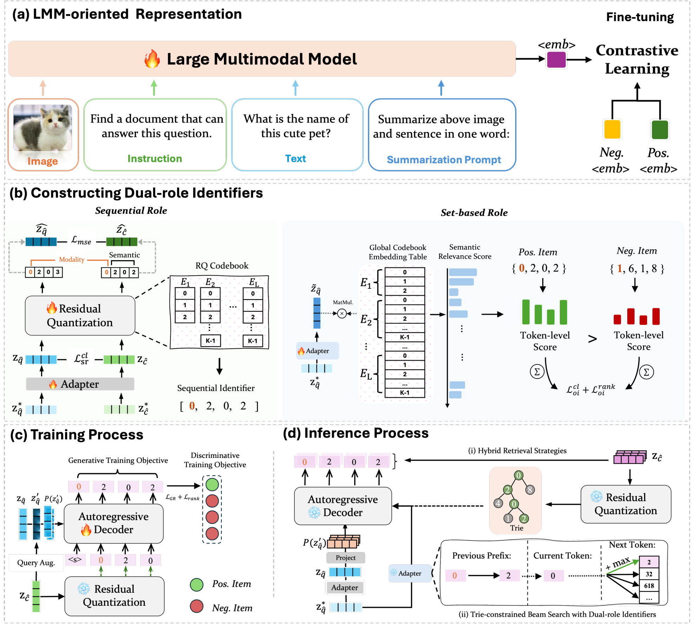
Figure 1 把系统分成四段。左上先用大多模态模型把 instruction 与不同模态内容压成共享向量，并以对比学习适配检索；左下的 residual adapter 与多层 RQ codebook 为 query/candidate 产生模态首码和逐级语义码，同时训练集合角色的 token-level scorer。右上训练时，query-target 插值向量经 projector 变成 decoder prefix，T5 同时学习正确 identifier 的 token 生成和正负序列排序；右下推理时，Trie 只允许合法 prefix，set prior 为每条 prefix 补充全局相关性，生成 top-$k$ 后可再回到连续空间做 dense rerank。图中的信息流也说明 representation encoder 并未因“生成式检索”而消失：它既是构码教师，也是 set scorer 与 hybrid reranker 的连续语义来源。因此 DrIG 的在线效率结论应理解为避免对全库穷举 dense score，而不是完全不使用 dense representation。
2.1 Instruction-aware 共享嵌入空间
输入表示沿用 LamRA 一类 LMM embedding 路线。图像、文本与图文混合输入分别拼接“用一个词概括”的任务提示，模型取特殊 embedding token 之前的最后隐状态作为向量。query 额外包含自然语言 instruction，告诉模型当前要找什么目标模态、属于什么任务；这点对 global-pool 尤其重要，因为同一候选池混合了新闻、百科、时尚与日常图像，单靠内容相似并不能确定要返回文本、图像还是图文 pair。作者采用两阶段微调：先用自然语言推断数据适配 text-to-text retrieval，再在 M-BEIR 多种多模态检索任务上用 InfoNCE 对齐 query 与正候选。实现中 encoder 为 Qwen2-VL，输出 3584 维向量。
这一连续空间承担三项职责。第一，它要先按 instruction 组织语义和目标模态，否则 RQ 只是在错误几何上做压缩；第二，它提供 hard negative 选择依据，set-role 与 decoder-ranking 阶段都从 batch 内挑 dense cosine 最接近的非匹配候选；第三，它保存量化之外的细粒度信息，供 DrIG-C/DrIG-LT 的第二阶段重排使用。训练是分阶段而非端到端联合：LMM 表征、RQ identifier、set scorer、prefix projector 与 T5 decoder 依次优化。这让模块边界清晰，却也意味着下游生成目标不能反向修正最初的 embedding 几何，论文把更紧耦合的联合优化列为未来方向。
2.2 顺序角色：模态首码与残差量化语义
连续向量先经过 residual adapter，再由 $L$ 个 codebook 逐层量化。第一层 codebook 大小固定为 3，对应 image、text 与 image-text pair；从第二层开始，codebook 表达前层未解释的语义残差。第 $i$ 层选择规则为：
符号解释：$r_{i-1}$ 是第 $i$ 层收到的残差，$E_i$ 是该层 codebook，$e_{ik}$ 是第 $k$ 个码向量，$k_i^*$ 是最近邻索引；选中后更新 $r_i=r_{i-1}-e_{i,k_i^*}$。于是 identifier $m=(m_1,\ldots,m_L)$ 具有明确的 coarse-to-fine 顺序：$m_1$ 先路由候选模态，后续 token 逐层解释剩余语义。量化向量是各层选中码向量之和。该结构适合自回归生成，但也意味着前层错误影响特别大：第一 token 若判错模态，后续合法路径已经落入错误候选子树。RQ 构码阶段并非只最小化重建误差，作者还把检索对比、逐层量化与量化后 pair consistency 合在一起：
符号解释：$\mathcal{L}_{sr}^{cl}$ 在量化前把匹配 query-candidate 拉近、batch 内非匹配推远；$\mathcal{L}_{rq}$ 让每层残差靠近选中的 code embedding，并用 stop-gradient 阻止该项直接更新 codebook，码向量改由 EMA 稳定更新；$\mathcal{L}_{mse}$ 约束量化后的 query 与正候选仍保持接近；$\beta_1,\beta_2$ 平衡三项量级，实验默认均为 100。Table 5 中去掉 $\mathcal{L}_{sr}^{cl}$ 后指标近乎崩塌，说明“先组织检索语义、再量化”比单纯增加 codebook 容量更基础。
2.3 集合角色与 dual-guided constrained beam search
符号解释：集合角色把同一个 $m$ 临时解释为无序 token 集合。query 向量经两层 MLP 后，与拼接全部冻结 RQ codebook 得到的全局表 $\bar E$ 做内积，再经 ReLU 与对数压缩；其中 $\tilde z_q$ 是 set scorer 细化后的 query 表示，$\bar E$ 收集每个量化层的 code embedding，$V_T$ 是所有层 token 数之和。$s_q[v]$ 可看成 query 对全局第 $v$ 个离散语义码的非负相关性。因为不同层可能复用相同局部编号，作者用层偏移函数 $\psi(l,m_l)$ 把第 $l$ 层 token 映射到全局词表位置，再对候选 identifier 所含 token 求和：
符号解释：$m_l$ 是候选在第 $l$ 个 codebook 中的索引，$\psi$ 加上前面各层词表大小作为偏移，$s_{oi}$ 是完整候选的 order-invariant score。求和不看 token 出现位置，因此不依赖 decoder 当前已经生成到第几层；但它也不是“完全无结构”，因为 $\psi$ 仍保留 token 来自哪个 quantization level。训练时，set scorer 使用 batch 对比损失和 hard-negative margin loss，难负例由连续空间 cosine 选出。论文写出的 margin 项为：
符号解释：$m_i$ 是正候选 identifier，$m_{j_i^-}$ 是 batch 内 dense cosine 最接近的错误候选，$\rho$ 是固定 margin。这里按 PDF 的式面忠实记录；其符号形式与常见的 $\rho-s_{pos}+s_{neg}$ 写法不同，在代码尚未公开时应把精确实现视为待核验点，不能擅自替作者改式。set-role 总目标再把对比项与该排序项等权相加。推理侧先用所有候选 identifier 建 Trie，任何新 prefix 若不是至少一个候选的前缀，就直接赋负无穷：
符号解释：$t_{\leq i}=[t_1,\ldots,t_i]$ 是扩展后的 prefix，$\delta$ 是硬结构约束而非可学习概率。Trie 解决“生成不存在 identifier”的问题，却不决定多个合法 prefix 中谁更相关；只保留 Trie 仍会出现早期局部最优。因此 DrIG 对每条 prefix 查看它可到达的完整候选集合 $C_{t_{\leq i}}$，取其中最大的 set score：
符号解释：$C_{t_{\leq i}}$ 包含顺序形式以当前 prefix 开头的所有候选，$\phi$ 不只评价已生成 token，而是问“沿这条分支继续走，最相关的完整候选有多好”。这个 max 使强候选能替分支争取继续留在 beam 的机会；代价是 score calibration 与候选集合维护都要可靠，且单个高分候选可能抬高整条分支。最终扩展分数把合法性、局部顺序证据与全局集合先验相加：
符号解释：$\eta(t_{<i};z_q)$ 是此前 token 的累计自回归分数，$E_i^{dec}[t_i]\cdot h_i$ 是当前 token 分数，$\lambda$ 控制 prefix-independent prior 的权重。这一步不是用集合分数替代自回归，而是让它成为 beam expansion 的额外全局提示；$\delta$ 管合法性，顺序项管生成一致性，$\phi$ 管可达候选的整体相关性。 Figure 5 显示 $\lambda>0$ 在多数任务优于 0，但不同任务曲线并不一致，说明两种分数的标度仍需校准。
2.4 Decoder 对齐、查询插值与 hybrid dense reranking
符号解释：离散 identifier 的容量低于连续 embedding，训练 query 又有限，作者因此在连续空间内把 query 与正候选插值，生成仍指向同一个 identifier。$z_q,z_c$ 是匹配 query 与 candidate 向量，$\mu$ 控制保留多少原 query，$\alpha$ 决定 Beta 分布形状，默认 $\alpha=2$。插值只用于训练，目的是在正 pair 之间制造语义仍一致但表面位置变化的 query；推理时使用真实 query，不需要目标向量。prefix projector 把 $z'_q$ reshape 成 $N$ 个 T5 prefix embedding，token-level cross entropy 教 decoder 生成正确 identifier。
仅做 token CE 仍可能与“相关候选应整体排在难负例前”不一致。作者对正负 identifier 在 teacher forcing 下取平均 token log-likelihood，并用连续 teacher similarity 决定 adaptive margin：
符号解释：$s_i^+,s_i^-$ 是正负 identifier 的 sequence-level 平均 log-likelihood，$M_i$ 来自正候选与 hard negative 的 dense cosine 差并乘缩放系数 $\gamma$。正负在 teacher 空间越容易区分，decoder 被要求拉开的间隔越大；最终 $\mathcal{L}_{decoder}=\mathcal{L}_{GR}+\mathcal{L}_{rank}$，把正确序列生成与检索排序对齐。消融显示该项总体有益但并非所有数据集、所有 $K$ 都单调改善。
生成阶段结束后，hybrid 方案只对 top-$k$ 计算 query-candidate cosine。若全库大小为 $|C|$、向量维度为 $d$，论文把全库 dense scoring 写成 $O(|C|d)$，top-$k$ rerank 则是 $O(kd)$ 且 $k\ll|C|$。DrIG-C 使用 CLIP-SF embedding，DrIG-LT 使用 LamRA embedding。这里的边界非常明确：重排能修正“正确候选已被生成但次序不佳”，不能修正“正确 identifier 已在 beam 中被剪掉”。因此实际系统要同时看 generative Recall@$k$、重排后的 top-1 与候选池规模，而不能只报告最终混合指标。
3. 实验结果
3.1 数据集、任务与评测口径
主基准 M-BEIR 汇总 10 个数据集、4 个领域和 8 种检索任务，query/candidate 可以是 text、image 或 image-text pair。论文报告 local-pool 与 global-pool 两种设置：前者只在当前数据集候选池检索，后者把所有数据集候选合成约 5.6M 的统一池，因而还要从 instruction 中推断目标模态与领域。指标是 query-level mean Recall@$K$：只要 top-$K$ 中至少包含一个 ground-truth candidate，就记该 query 成功；论文主要报告 R@1、R@5 与 R@10。实现使用 Qwen2-VL 3584 维 encoder、T5-small decoder、8×4096 默认 RQ 配置，beam size 50、$\lambda=1.0$，训练用 4 张 A100 40GB。这个硬件与默认大 beam 对理解 QPS 很重要。
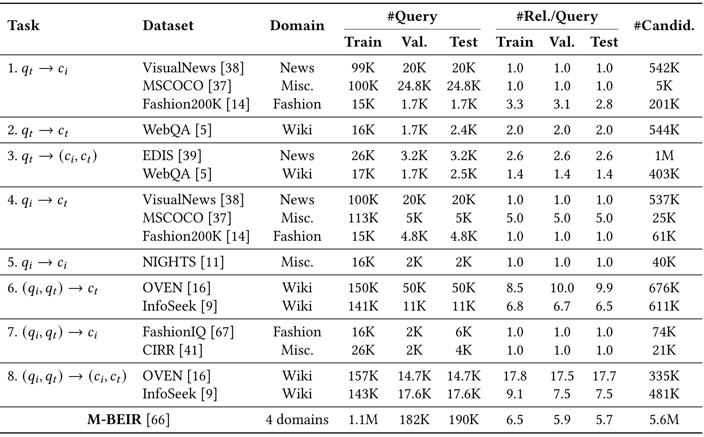
Table 1 显示八种模态映射不是同等难度。VisualNews、MSCOCO 与 Fashion200K 共同构成 text-to-image 和 image-to-text；WebQA 同时覆盖 text-to-text 与 text-to-image-text；OVEN、InfoSeek 则要求图文 query 找文本或图文证据。候选规模从 MSCOCO 的 5K/25K 到 EDIS 的 1M 不等，知识任务常有一个 query 对多个 relevant items，M-BEIR 汇总的平均每 query 相关项约为训练 6.5、验证 5.9、测试 5.7。global-pool 把不同任务、领域与目标类型混在一起，因此第一层 modality codebook 有实际路由作用；不过 NIGHTS 只有图像候选，这也解释了 Table 5 中移除 modality token 反而略升的例外。表格还说明 MSCOCO 已经属于 M-BEIR，所以后文“M-BEIR 训练后测试 MSCOCO”不具备严格跨数据集 zero-shot 含义。
3.2 M-BEIR 主结果：纯生成与 hybrid 必须分开
baseline 分成 dense vector retrieval、LMM reranking、generative retrieval 和 generative+dense reranking。GENIUS 是最接近的通用多模态生成基线；GENIUS-C 用 CLIP-SF 重排。DrIG 本体不重排，DrIG-C/DrIG-LT 分别用 CLIP-SF/LamRA 对生成候选重排。这样的分组允许回答两个不同问题：dual-role identifier 是否改善纯生成候选质量，以及连续重排在已生成候选上还能补多少。
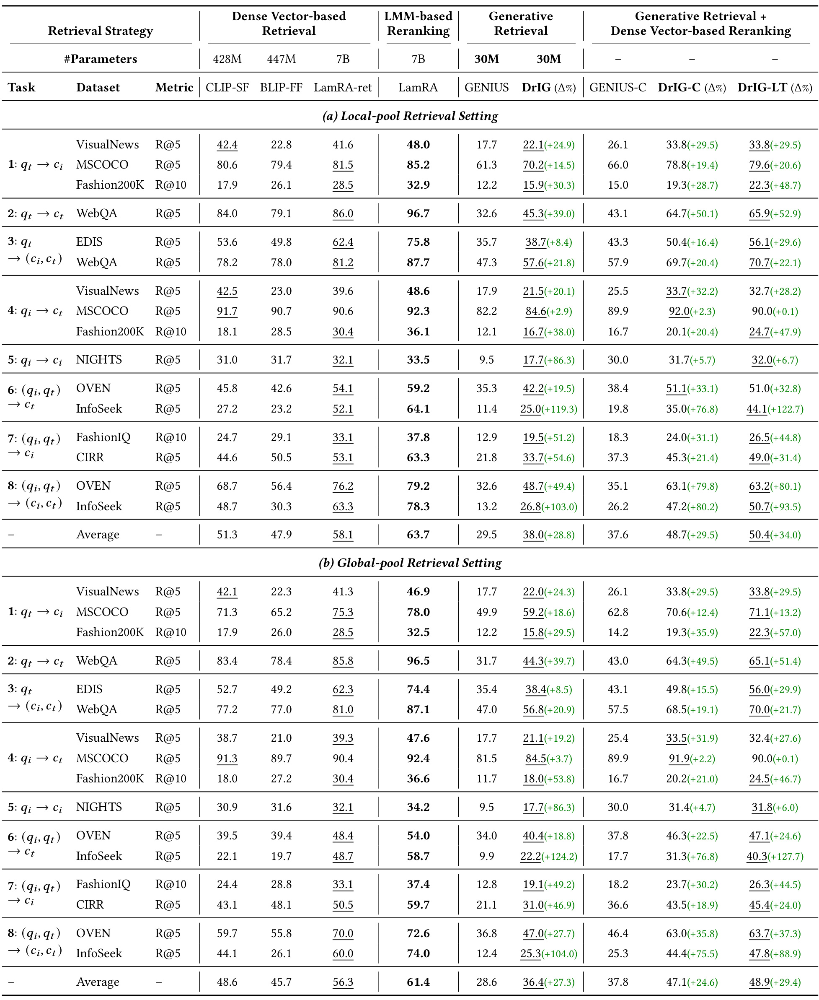
Table 3 的纯生成列给出最直接证据：local-pool 平均分由 GENIUS 的 29.5 提到 DrIG 的 38.0，相对 +28.8%；global-pool 从 28.6 提到 36.4，相对 +27.3%。提升在 InfoSeek、CIRR、NIGHTS 等任务上尤其大，例如 local InfoSeek 图文到文本 R@5 为 11.4→25.0，CIRR 为 21.8→33.7；global InfoSeek 两种目标形式分别从 9.9→22.2、12.4→25.3。local 到 global 时 DrIG 平均只从 38.0 降到 36.4，说明 modality-aware code 与 instruction-conditioned decoding 在混合池中仍能工作。加入 dense rerank 后 local 的 DrIG-C/DrIG-LT 达 48.7/50.4，global 为 47.1/48.9；但最强 LamRA 在两种设置仍有 63.7/61.4，LamRA-ret 也有 58.1/56.3。WebQA text-to-text 上 local DrIG-LT 65.9，而 LamRA 96.7，说明离散 identifier 对知识密集文本的精细信息损失远未消失。因而合理结论是“显著强于先前生成式基线、hybrid 提供较好折中”，而不是“已经超过强 dense/LMM 检索”。
3.3 Flickr30K 与 MSCOCO 文生图结果
Flickr30K 有两条训练路径：M-BEIR 训练后直接测试，属于 cross-benchmark zero-shot；以及在 Flickr30K 上 in-domain 训练。MSCOCO 本身已是 M-BEIR 组成部分，所以 M-BEIR-trained MSCOCO 结果只能表示 universal model 在标准文生图任务上的表现，不能标成严格 zero-shot。论文还同时报告纯 DrIG 与 LamRA 重排后的 DrIG-LT，二者需要分别比较。
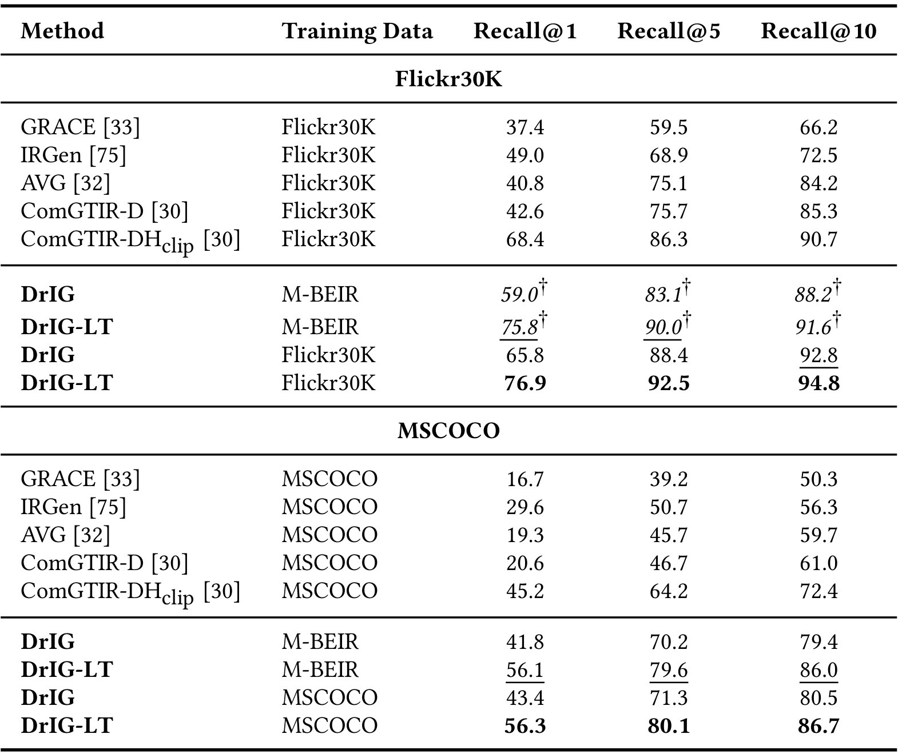
Table 4 中，M-BEIR 训练的 DrIG 在 Flickr30K zero-shot 达到 R@1/5/10 = 59.0/83.1/88.2，DrIG-LT 为 75.8/90.0/91.6；in-domain 训练后分别升至 65.8/88.4/92.8 与 76.9/92.5/94.8。说明异构 M-BEIR 训练学到的 visual-semantic identifier 确有跨数据集迁移能力，同时 task-specific fine-tuning 仍能补收益。MSCOCO 上，M-BEIR 训练的纯 DrIG 为 41.8/70.2/79.4，DrIG-LT 为 56.1/79.6/86.0；in-domain 后仅小幅升到 43.4/71.3/80.5 和 56.3/80.1/86.7。还应注意 hybrid 的收益主要集中在头部：M-BEIR 训练时，LamRA rerank 让 Flickr30K R@1 增 16.8 点、MSCOCO 增 14.3 点，而 R@10 增量较小。这符合“生成阶段经常已把正确候选放进 top-$k$，连续重排负责把它推到前几位”的解释，也再次说明最终 DrIG-LT 不是纯生成分数。
3.4 组件消融与离散空间几何
消融在不使用 dense rerank 的 base DrIG 上进行，从而避免第二阶段掩盖 identifier 或 decoder 的贡献。移除项包括 set-based role、Trie、二者同时移除、query augmentation、式(21) 的 ranking loss、式(4) 的 pre-quantization contrastive loss，以及第一层 modality codebook。
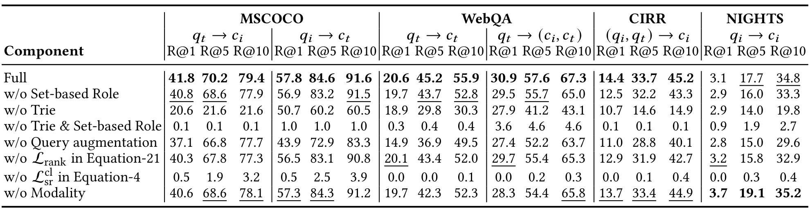
Table 5 呈现出清楚的层级。去掉 set role，MSCOCO text-to-image R@1 从 41.8 降到 40.8，WebQA text-to-multimodal R@5 57.6→55.7，CIRR R@5 33.7→32.2，NIGHTS R@5 17.7→16.0；它是跨任务稳定但幅度温和的增益，不应单独解释全部主结果。去掉 Trie 的破坏更大，MSCOCO t2i R@10 79.4→21.6、CIRR R@10 45.2→14.9，因为 decoder 开始产生不对应真实候选的序列；Trie 与 set role 同时移除后多数指标接近零。query interpolation 对 MSCOCO image-to-text 和 WebQA text-to-text 很重要，R@1 分别 57.8→43.9、20.6→14.9。最强烈的是去掉 $\mathcal{L}_{sr}^{cl}$：MSCOCO t2i R@1 41.8→0.5，WebQA t2t R@1 20.6→0.0，说明 residual quantization 无法自行创造检索几何。modality token 在异构任务普遍有益，却在纯图像 NIGHTS 上略退，表明把第一层容量固定给模态并非所有候选池都最优。
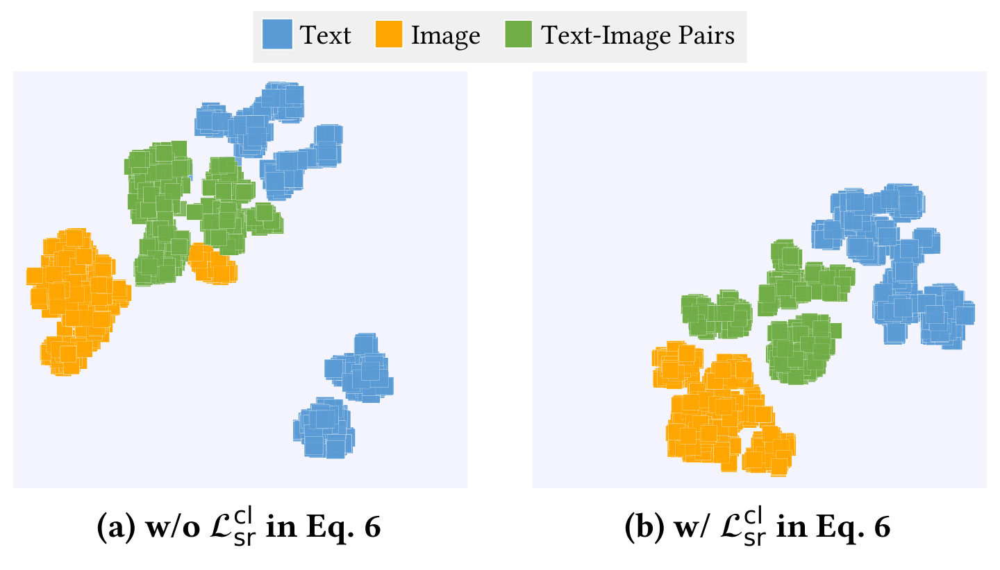
Figure 2 为 $\mathcal{L}_{sr}^{cl}$ 的崩塌式消融提供表征层解释。没有该损失时，text、image 与 image-text pair 虽已出现局部模态结构，但簇分散、边界重叠，尤其文本与图文 pair 容易混在一起；加入对比目标后，三类 code representation 更紧凑、分离更明显。它不能证明 t-SNE 中的视觉分离必然导致所有检索提升，因为 t-SNE 会扭曲全局距离；但与 Table 5 的近零指标结合，至少支持一个更稳妥的因果链：instruction-aware continuous space 先按正负 pair 组织，再由 RQ 压缩，才可能形成可生成且有检索意义的 token。换句话说，量化误差小不等价于相关性结构正确，构码目标必须显式含 retrieval supervision。
3.5 效率、codebook、beam、reranking 与 prior 敏感性
论文在单张 A100 上把 image candidate pool 从 5K 扩到 300K。生成式方法的主要在线成本来自固定长度 identifier 的自回归解码，因而 GENIUS 与 DrIG 的 QPS 曲线相对平；dense baseline 在该实现中随候选增多需要更多相似度计算，吞吐下降。DrIG-C 对固定生成集合重排，也保持相对稳定。这里测得的是特定实现与硬件下的 online throughput，不包含离线构码、Trie 更新和动态库维护成本。
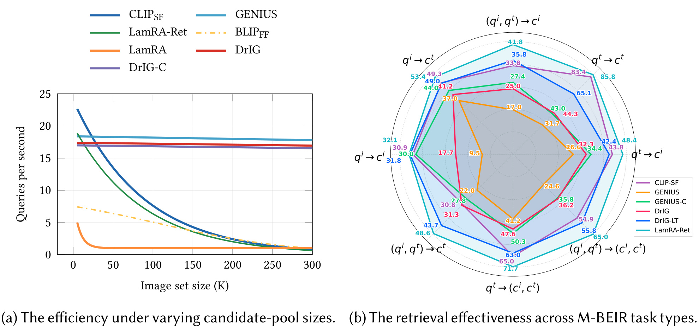
Figure 3 左侧确认 candidate pool 扩大时，DrIG/GENIUS 的吞吐变化比 CLIP-SF、BLIP-FF 和 LamRA-ret 平稳，LamRA 因 LMM reranking 最慢；右侧则提醒稳定吞吐并不等于绝对效果最高。纯 DrIG 的多任务轮廓整体包住 GENIUS，表明双角色机制没有牺牲生成式的扩展特征；DrIG-LT 继续扩大效果轮廓，但 LamRA-ret/LamRA 仍在多个方向领先。论文正文给出的 global average 也是 36.4→48.9，而 LamRA-ret/LamRA 为 56.3/61.4。工程上，这意味着 DrIG 更像一个可调 operating point：对候选规模敏感的召回层可先用生成式索引压缩搜索，再按 SLA 选择是否精排；若任务是知识密集文本或要求极高 top-1，强 dense/LMM 方法仍可能更合适。
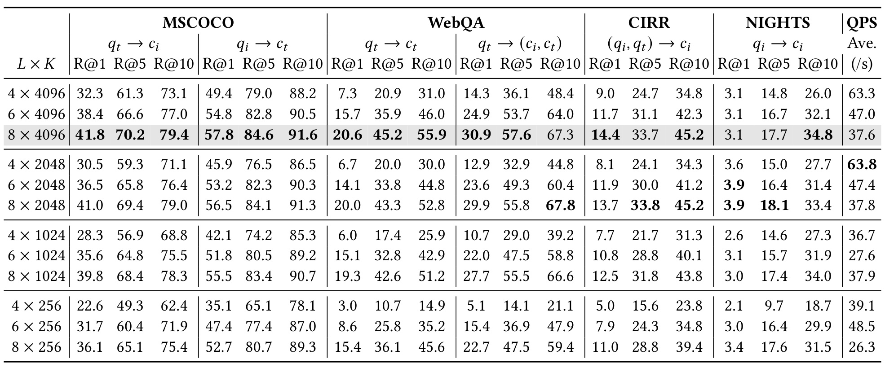
Table 6 显示 深度 $L$ 比单纯扩大词表 $K$ 更稳定地提升效果。在 $K=4096$ 时，$L=4\to8$ 使 MSCOCO t2i R@1 从 32.3 升到 41.8，WebQA t2t R@1 从 7.3 升到 20.6；与此同时 QPS 从 63.3 降到 37.6，因为 decoder 要生成更长 identifier。固定 $L=8$ 时，大词表在 MSCOCO 与 WebQA 多数指标最好，但 CIRR、NIGHTS 的部分指标由 8×2048 略胜 8×4096，说明超大词表未必适合细粒度视觉相似，适度量化可能提供正则化。QPS 对词表大小并不严格单调，因为 Trie 只扩展合法 prefix，不会遍历全部 vocabulary。默认 8×4096 是平均效果最强的点，却不是每个数据集或每个延迟预算下的唯一选择。
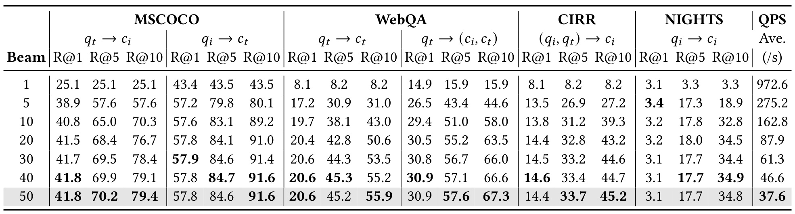
Table 7 对 early-prefix 风险给出最直接的搜索侧证据。beam=1 时 MSCOCO t2i R@1/5/10 全为 25.1，因为 greedy 只输出一条路径；beam=10 后 R@10 达 70.3，beam=50 达 79.4。多数任务从 1 到 20 改善最快，30-50 逐渐饱和，且 R@1 不保证单调：NIGHTS 的 R@1 在 beam=5 为 3.4，之后回落到约 3.1-3.2。吞吐代价非常大，平均 QPS 从 beam=1 的 972.6 降到 beam=50 的 37.6，约为前者的 3.9%。因此默认 50 是“优先最大化离线效果”的研究配置，不等于线上最优；对实际召回服务，20 或 30 可能用少量覆盖损失换来显著吞吐回收。dual-role prior 缓解剪枝，却没有让 beam 宽度失去作用。
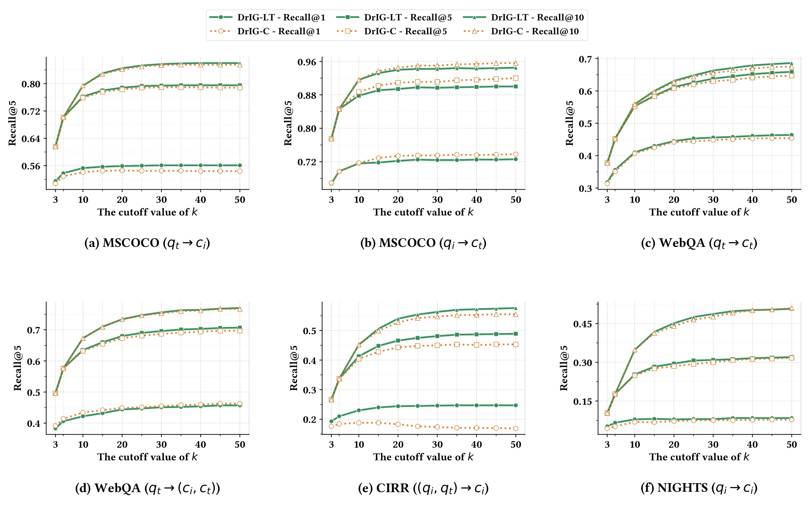
Figure 4 比较 DrIG-C 与 DrIG-LT 在 $k=3$ 到 50 的六类任务曲线。共同形态是从极小 $k$ 增到中等区间时收益最大，之后趋于饱和；原因不是 reranker 的计算突然失效，而是它只能在 generative top-$k$ 中换序。NIGHTS 等视觉近邻密集任务从 3 到 10 的改善尤为明显，小候选池容易把 ground truth 留在重排范围之外；当主要相关候选已进入池后，再扩大 $k$ 只增加少量可纠正项。多数任务上 DrIG-LT 高于 DrIG-C，表明 LamRA embedding 提供更强细粒度信号，但也带来更高模型与服务成本。论文默认 $k=50$ 追求效果，20/30 是作者给出的效率敏感替代点；线上选择应同时记录生成 Recall@$k$、重排延迟和最终 top-$K$，否则无法定位故障发生在候选覆盖还是重排序。
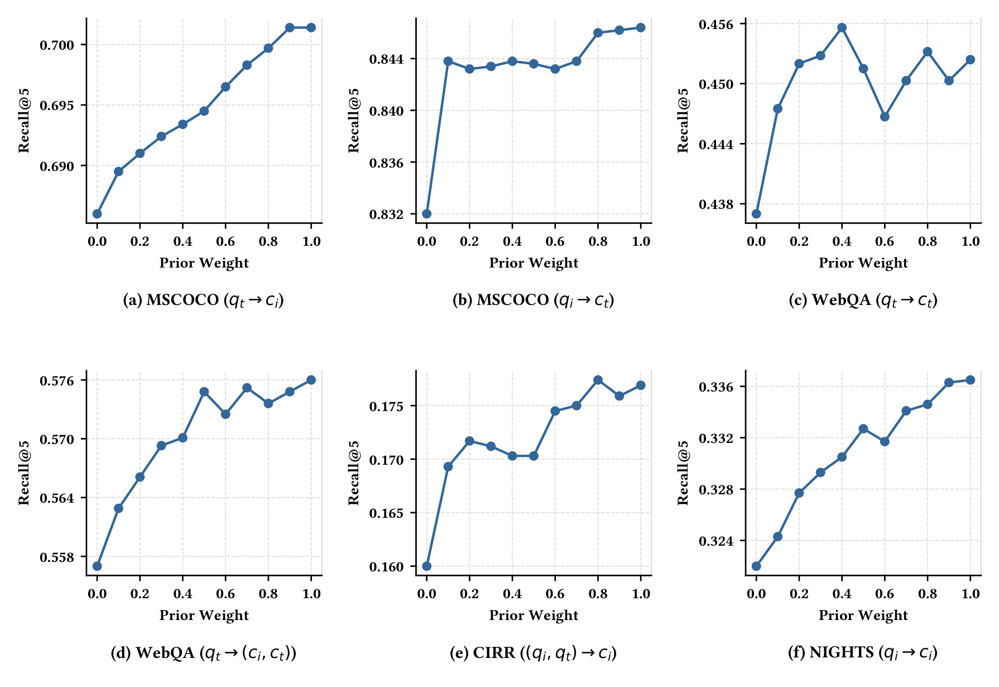
Figure 5 把式(16)的 $\lambda$ 从 0 调到 1。$\lambda=0$ 只剩顺序 decoder 与 Trie；大多数任务在加入 set prior 后 Recall@5 上升，MSCOCO t2i、WebQA text-to-multimodal、CIRR 与 NIGHTS 的总体趋势尤其清楚，支持 prefix-independent signal 能保留全局相关分支。不过纵轴区间很窄，部分提升是百分点小数级，WebQA text-to-text 等曲线还会波动；不能把“多数任务优于 0”扩张成“越大越好”。作者用 $\lambda=1.0$ 作为跨任务稳定默认值，但最优点随模态变化，这暴露出 sequential score 与 set score 的校准问题。若迁移到推荐召回，最好按 query 类型或候选模态分桶检查 $\lambda$，并监控先验是否被某个高分候选劫持整条 prefix。
论文还比较了 decoder backbone。T5-base/large 能改善部分文本或知识任务，例如 WebQA text-to-text R@1 从 T5-small 的 20.7 增至 23.2/24.1；但视觉组合任务反而退化，CIRR R@1/5/10 从 14.4/33.7/45.2 降到 T5-large 的 10.4/27.2/39.2，NIGHTS 也下降。瓶颈因此不只是语言 decoder 容量，更可能在视觉语义量化与 identifier 区分度。30M 参数的 T5-small 提供更平衡的跨任务表现，也更符合生成式检索的效率目标。
3.6 案例：生成成功、精排纠正与共同失败
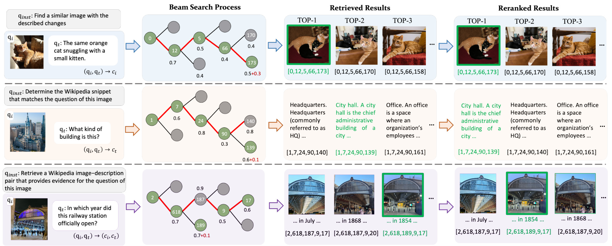
Figure 6 的三个案例对应两阶段系统的不同故障位置。第一例中，红色生成路径直接把 ground-truth image 排到第一，正确分支末端 token 173 同时获得 set-based relevance 加成，说明顺序分数与全局 prior 同向时，dual-guided beam 可以稳定保住正确路径。第二例中，正确 text candidate 虽仍在 generative top-$k$，但组合分数低于竞争分支；LamRA dense similarity 在连续空间重新比较后把它提升到 rank 1，展示 hybrid reranking 能修正“候选已覆盖、顺序仍错误”的情形。第三例要求同时匹配铁路车站视觉内容与“开放年份”之类细粒度文本证据，DrIG 虽判断目标为 image-text pair，也找到了视觉相近候选，但正确 token 189 分支仍输给 187，dense rerank 同样未能置顶。该失败说明 set prior、离散码和连续 reranker 可能共享表征盲点：当决定性区别来自细粒度跨模态事实，增加 beam 或重排深度未必足够，还需要更强 grounding、交叉编码或证据级训练。
4. 总结
4.1 我的判断
DrIG 最有价值的贡献，是把 generative retrieval 的前缀局部性问题转化成一个可插入 constrained beam search 的全局先验，而不另建第二套 identifier。实验支持三层结论：纯 DrIG 在 M-BEIR 上稳定超过 GENIUS，set role 本身带来幅度不大但跨任务一致的增益；Trie 与量化前对比学习才是系统可用性的基础；hybrid dense reranking 显著改善头部排序，却没有追平最强 LamRA。对推荐系统而言，这种架构适合候选库巨大、召回吞吐敏感、item 可离线构码的场景：第一 token 可扩展成内容类型或业务域路由，后续码表达多级兴趣/语义，set prior 可在 beam 中保留全局相关 item，dense reranker 再处理头部细粒度差异。迁移时不应直接套论文数字，而应重做动态 item 更新、长尾冲突率、热门前缀拥塞、top-$k$ 覆盖与线上延迟评估。
4.2 局限与风险
- 评审与复现状态有限。 论文仍是 under review 的 arXiv v1，代码只承诺后续发布；式(10) 的符号形式、Trie prior 的高效实现、训练数据处理与完整随机性目前无法用公开实现核对。
- hybrid 收益不能归给纯生成。 DrIG-LT 的大幅提升依赖 LamRA 连续 embedding；正确候选必须先留在 generative top-$k$，重排才有作用。最强 LamRA/LamRA-ret 的绝对效果仍明显更高。
- 基准外推受限。 M-BEIR 聚合 10 个数据集和 5.6M candidates，但仍不是开放网络或推荐线上流量；Flickr30K 是严格 cross-benchmark zero-shot，MSCOCO 因已包含在 M-BEIR 中不能作同样宣称。
- 动态语料与索引维护未解决。 新增、删除候选会改变 RQ 分布、Trie 与 prefix 下可达集合，论文未给出无需重训的稳定更新机制。热门 prefix 下求最大 set prior 的内存与刷新成本也需要单独测量。
- 细粒度多模态证据仍是薄弱点。 WebQA 知识文本与 Figure 6 的铁路案例表明，离散码和 dense reranker 都可能丢失决定性事实；更大 decoder 也没有稳定改善 CIRR/NIGHTS。
- 效率口径并非端到端成本。 QPS 结论来自单 A100、固定 identifier、beam 与实现，对离线 encoder、构码、索引更新、显存占用和分布式服务未给完整成本表；beam=50 的 37.6 QPS 也提示默认研究点未必满足生产 SLA。
4.3 复现与后续跟进
- 等待公开代码后，先核验式(10) 的实现符号、prefix 下 $\max s_{oi}$ 的缓存/更新方式，以及 Table 5 每项消融是否严格保持候选、beam 与训练预算一致。这些细节决定 dual-role prior 的真实可复现性。
- 复现应按三层指标拆开：纯 DrIG 的 generative Recall@$k$、DrIG-C/LT 的 reranked Recall 与 candidate-pool/beam 下 QPS。重点画出 beam 20/30/50、rerank depth 20/30/50 的 Pareto 前沿，不只复刻默认最高分。
- 在推荐召回数据上增加动态 item 插入、长尾 item、跨模态冷启动与时间漂移测试；记录 identifier collision、热门 prefix 分支度、正确 item 被剪枝的层级及 set prior 的救回率，才能判断它是否比树召回或 ANN 更适合线上。
- 对知识密集与图文细粒度任务，比较仅 cosine rerank、late interaction 与小型 cross-encoder rerank，验证剩余差距来自量化信息丢失还是 shared encoder 本身。若 cross-encoder 能显著修正 Figure 6 第三类错误，hybrid 的第二阶段就应按任务复杂度自适应，而非固定一种 dense similarity。
总体而言，DrIG 给出了一条清晰而克制的路线：用 residual quantization 建立模态感知的顺序索引，用同一批 token 构造 prefix-independent prior，再用可选 dense reranking 回收量化损失。它已经证明“双角色”比只做顺序生成更稳，但尚未证明离散生成能取代强 dense/LMM 检索；在代码公开、动态库与端到端成本被验证之前，更适合把它视为高扩展性候选生成器与混合检索组件，而非完整检索栈的定论。